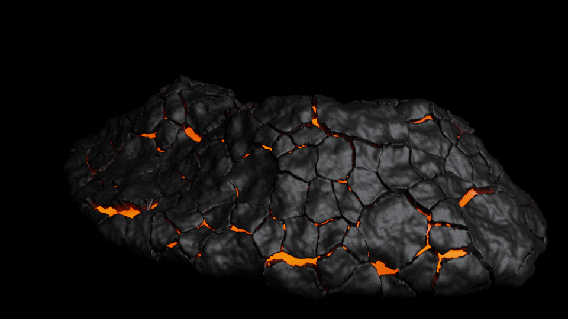

From melt to stone.
Molten interiors, fractured crust and cooled rock. Five material views, with the glass branch shown separately.

03 / COOLINGThick basalt crust. Hot melt remains beneath the joints.
Download image ↗
Obsidian is a separate composition and cooling branch; basalt does not become obsidian by cooling further. Download all five images ↗
About these studies
The stills use Mitsuba on the CPU. The motion combines Mitsuba surfaces with deterministic CPU integration of the simulated plume, using light extinction and single scattering. All backdrops are black.
The liquid uses a conservative depth-averaged viscous-flow model. Crust pieces follow that flow without a solid fracture or collision solve. Gas velocity uses pressure projection and buoyancy; plume visibility comes from an approximate condensation field. These are reduced material studies, not a full geological or Houdini-equivalent simulation. The cold basalt and obsidian images are separate authored states.
USGS on obsidian · USGS on visible volcanic plumes · Render and simulation record